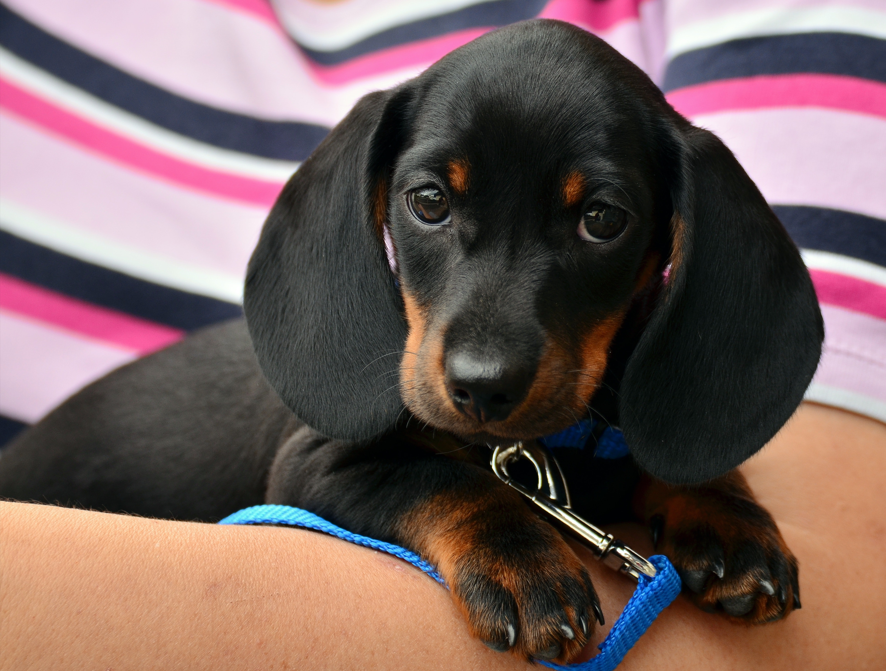

Top 10 Foreign Dog Breeds
1. Golden Retriever

First, in our list of best dogs for a home in India is Golden Retriever. This is the top-rated dog for homes and families. Golden retrievers are known for their obedient and caring nature. This breed is smart and can be trained as they are perfect in competitions. They are also ideal watchdogs and have medium-sized built. Golden retrievers have a waterproof coat that requires regular grooming. The breed-Retriever’s name refers to the breed’s ability to retrieve shot game undamaged because of its soft mouth. The breed has instinctive love for the water. The breed is best suited for urban or country environments. This breed originated from Scotland.
Group – Sporting
Height – 21 to 24 inches
Weight – 25 to 35 Kg
Life Span – 10-12 years
2. German Shepherd

Also known as GSD, German shepherds are medium to large-sized. The breed originated from Germany where it received its name. German Shepherd has a wolf-like appearance. Despite of having a scary body, German Shepherds are incredibly loving and caring. They are ideal watchdogs. The breed is mostly used for search and rescue operations, disability assistance, police, and military roles.
Group – Working Group
Height –22 to 26 Inches
Weight – 25 to 35 KG
Life Span – 9 to 13 years
3. Labrador
Next on our list of best dogs for a home in India is Labrador. It is one of the most useful working dogs. The breed is formerly known to be the fisherman’s helper, they used to help in picking ropes, and picking up fish from North Atlantic. The breed is considered to be one of the best dog breeds for families in India. Labradors are hardworking and have a good nature. Modern Labrador works as a hunter’s retriever, shows competitors help dogs, and is a perfect watchdog.
Group – Sporting
Height – 22 to 24 inches
Life Span – 10-12 years
4. Beagle
Beagle is a small hound that looks like a larger foxhound. This breed of dog was primarily developed for hunting hares. The breed possesses exceptional small and superior tracking instincts. It is one of the dogs that is used as detection dogs for prohibiting foodstuffs and agriculture imports from across the world, especially during the quarantine. Beagles are intelligent and are popular due to their good temper, size, and lack of health problems. Undoubtedly, it is one of the best home dogs in India.
Group – Hound group
Height – 13 to 15 inches
Weight – 20 to 25 Kg
Life Span – 12 to 15 years
5. Pug

Known to be the best breed of dog for a home in India, Pug is an ideal pet. This breed is easy to maintain as they shed very less hair. It has physically distinctive features that included a wrinkled body, short-muzzled face, and curled tail. Pugs have a glossy and fine coat in an array of colors. This is one of the dog breeds in India for home as they are more sociable and good companions.
Group – Toy Breed
Height – 11 to 13 inches
Weight – 11 to 16 Kgs
Years – 12 to 15 years
6. Rottweiler
Rottweiler is amongst the best breeds of dogs for families in India. The breed is known to be a fierce protector and affectionate. They have tremendous strength and are exceptionally loyal to their master. Thus, they make ideal companions for households. However, they have to be socialized and trained in the best way possible from childhood itself. The breed has a short coat and loose hair on a regular basis. Rottweilers have a good diet, make sure you provide the best dog food with ample nutrients. These dogs come in tan and black or mahogany and black colors.
Group – Working
Height – 24 to 26 inches
Weight – 40 to 50 Kg
Life Span – 8 to 10 years
7. Cocker Spaniel

Next on the list of home dog breeds in India is Cocker Spaniel. Surprisingly, Cocker Spaniel is crossbreed of two different breeds that are American Cocker Spaniel and the English Cocker Spaniel. The breed has been originated from the United Kingdom, where they were bred as hunting dogs. This breed is also known as cockers. The breed has a medium size; thus, they are easy to tame at home. Cocker Spaniels can easily live in an apartment. They feature a medium-length silky coat that slightly wavy and flat. The breed comes in multi-colors with lines.
Group – Sporting
Height – 13 to 16 inches
Weight – 25-35 kg
Life Span – 10 to 14 years
8. Great Dane
Great Dane is one of the German breeds and is famous for their large size. The breed is also known as Deutsche Dogge, German Mastiff, Boarhound, or Apollo of Dogs. The breed is loyal and intelligent. They are easy to train. It is believed that Great Dane loves kids and is sweet in nature. These dogs are generally found in white, red, hat, fawn, and brindle colors. They are accessible to pets, which is counted amongst the best dogs for a home in India.
Group – Working
Height – 28 to 32 inches
Weight – 45 to 90 kg
Years – 10 to 12 years
9. Dachshund
Dachshund is popularly known as badger dog, wiener dog, and sausage dog, a short-legged and long-bodied dog. Dachshunds are good at expressing their feelings and are a bundle of joy, which makes them one of the best dogs for a home in India. The breed is available in two different sizes, which are miniature and standard. The smaller size of the dog is known to be miniature. They have a loud voice because of this these dogs can be ideal home watchers.
Group – Hound group
Height – 8 to 9 inches
Weight – 8 to 11 Kg
Life Span – 10 to 14 years
10. Boxer
Next on our list of best dogs for home is Boxer. The breed is easy to train and maintain. Seeing their size and build, Boxer is ideal for all types of households, making them one of the best breeds of dog in India for home. The appearance of breed has a large head body, powerful jaws, and square muzzle. The breed is friendly in nature. The dog is available in colors like fawn, brindle, and white.
Group – Working
Height – 21 to 25 inches
Weight – 25 to 32 kg
Life Span – 7 to 10 years